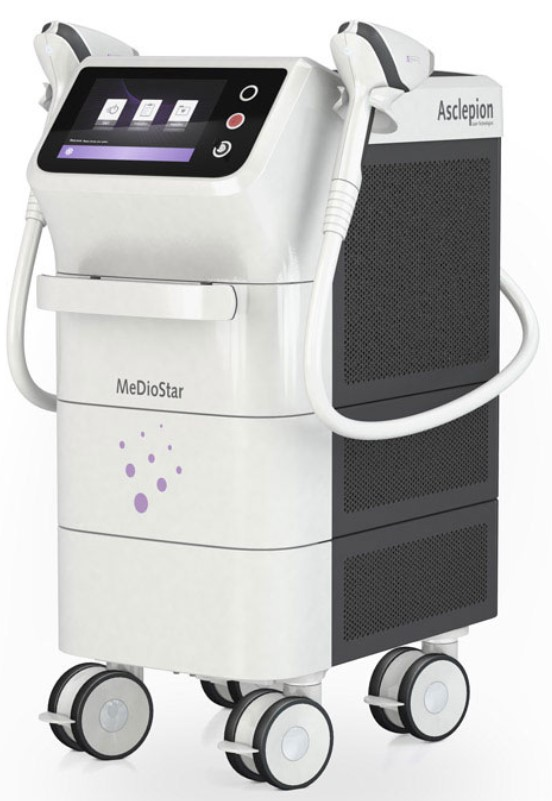

Was ist ein Diodenlaser?
Die Hochleistungs-Diodenlaser der MeDioStar® Familie repräsentieren
die modernsten Technologien für die Haarentfernung.
Die Wellenlänge der MeDioStar Systeme wurde so gewählt, dass die Absorption der Lichtstrahlung in Melanin hoch, aber in Wasser (wesentlicher Bestandteil der Haut) niedrig ist.
Dadurch wird eine selektive und sichere Behandlung ohne Risiko von Nebenwirkungen garantiert.
Gleichzeitig ist es möglich dunkle Hauttypen (bis zu Hauttyp VI) mit geringem Risiko zu behandeln. Zusätzlich kann man insbesondere bei größeren Flächen noch einen speziellen Behandlungs-Modus (SmoothPulse) anwenden, sodass selbst für empfindliche Patienten die Laserimpulse kaum zu spüren sind. Durch diese optimale Gestaltung des MeDioStar Lasers sind Nebenwirkungen, die über eine leichte Rötung und Schwellung um dunkle Haare herum hinausgehen, äußerst selten.
Dabei muss das Licht mehrere Millimeter in die Haut eindringen, um auch die Haarwurzel zu erreichen. Wenn es auf das Melanin (braune Farbe) der Haare trifft, wird es absorbiert, das heißt, es wird in Wärme umgewandelt.
Die Hitze ist umso stärker, je dunkler, dicker und dichter die Haare sind.
Durch die so verursachte thermische Schädigung der Zellen im Haar und in der unmittelbaren Haar-Umgebung, die für das Nachwachsen der Haare verantwortlich sind, wird eine drastische Reduktion der Haare im behandelten Areal erreicht.
Gleichzeitig muss man gewährleisten, dass trotz der erzeugten Hitze keine Blasen oder gar Narben entstehen. Deshalb sind die Systeme von Asclepion mit einer starken Hautkühlung ausgestattet, welche die oberste Hautschicht immer vor dem Lichtimpuls kühlt und neben der Schonung der Epidermis die Behandlung angenehmer gestaltet.
Die Wellenlänge der MeDioStar Systeme wurde so gewählt, dass die Absorption der Lichtstrahlung in Melanin hoch, aber in Wasser (wesentlicher Bestandteil der Haut) niedrig ist.
Dadurch wird eine selektive und sichere Behandlung ohne Risiko von Nebenwirkungen garantiert.
Gleichzeitig ist es möglich dunkle Hauttypen (bis zu Hauttyp VI) mit geringem Risiko zu behandeln. Zusätzlich kann man insbesondere bei größeren Flächen noch einen speziellen Behandlungs-Modus (SmoothPulse) anwenden, sodass selbst für empfindliche Patienten die Laserimpulse kaum zu spüren sind. Durch diese optimale Gestaltung des MeDioStar Lasers sind Nebenwirkungen, die über eine leichte Rötung und Schwellung um dunkle Haare herum hinausgehen, äußerst selten.
Wie funktioniert Laser-Haarentfernung?
Bei der Haarentfernung mit dem Hochleistungs-Monolith-Diodenlaser wird die Energie des Lichts genutzt, um das Nachwachsen der Haare zu verhindern.Dabei muss das Licht mehrere Millimeter in die Haut eindringen, um auch die Haarwurzel zu erreichen. Wenn es auf das Melanin (braune Farbe) der Haare trifft, wird es absorbiert, das heißt, es wird in Wärme umgewandelt.
Die Hitze ist umso stärker, je dunkler, dicker und dichter die Haare sind.
Durch die so verursachte thermische Schädigung der Zellen im Haar und in der unmittelbaren Haar-Umgebung, die für das Nachwachsen der Haare verantwortlich sind, wird eine drastische Reduktion der Haare im behandelten Areal erreicht.
Gleichzeitig muss man gewährleisten, dass trotz der erzeugten Hitze keine Blasen oder gar Narben entstehen. Deshalb sind die Systeme von Asclepion mit einer starken Hautkühlung ausgestattet, welche die oberste Hautschicht immer vor dem Lichtimpuls kühlt und neben der Schonung der Epidermis die Behandlung angenehmer gestaltet.

Foto Credit: https://mediostar-laser.com/